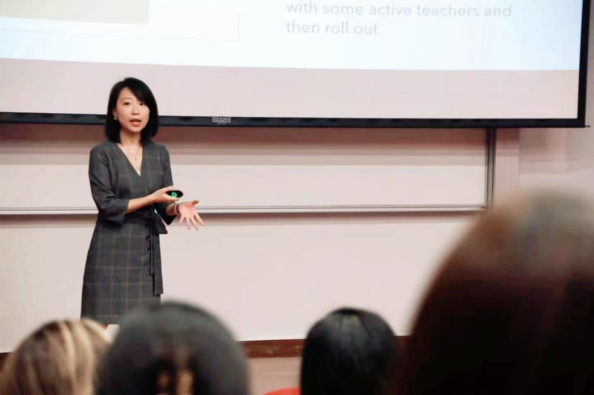
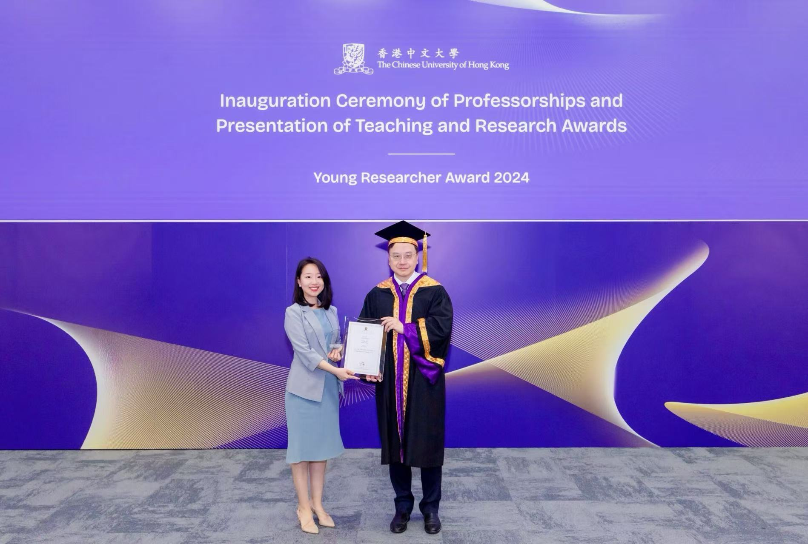
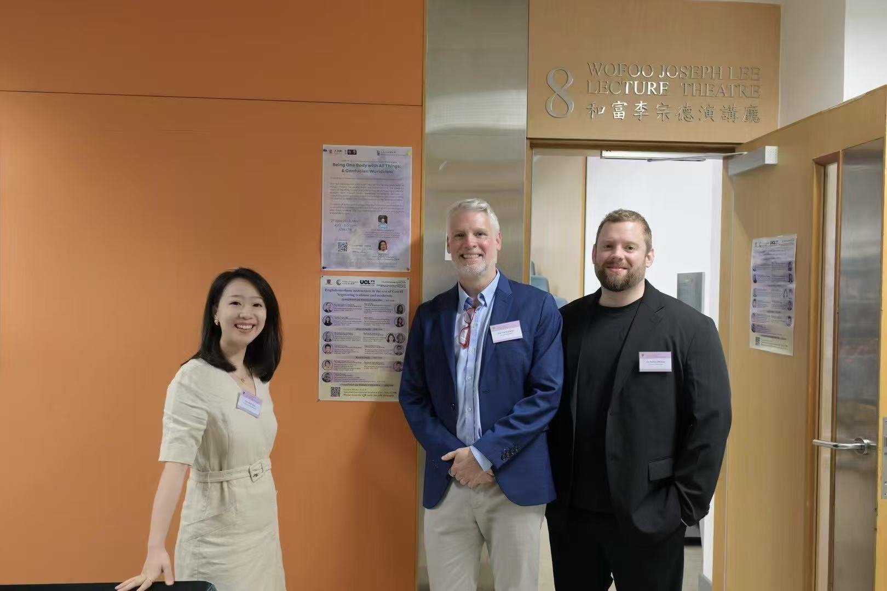
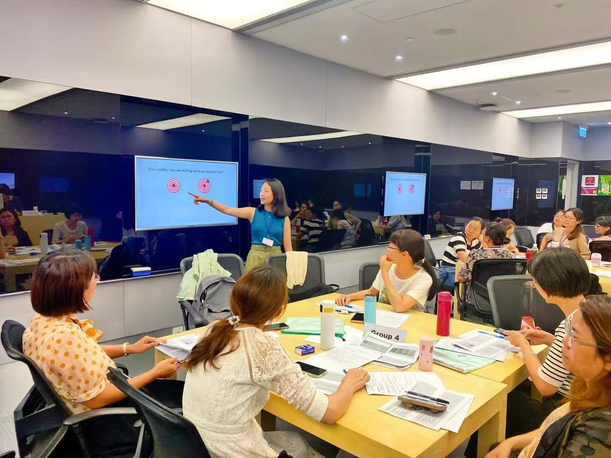
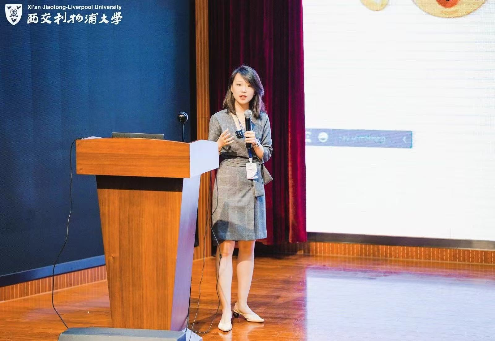

Young Researcher Award, The Chinese University of Hong Kong
Awarded for outstanding research in the University (one award per faculty per year)
This homepage gathers Sihan Zhou's research on self-regulated learning, EMI, technology-assisted language learning, publications, teaching, and professional service.







Sihan Zhou is Assistant Professor of Curriculum and Instruction at the Chinese University of Hong Kong and Honorary Research Fellow at the University of Oxford. She has taught in both China and the United Kingdom and led professional development programs for language educators at the primary, secondary, and tertiary levels. Her work draws on theories in educational psychology to understand language learners’ self-regulated learning in emerging contexts such as English-medium instruction (EMI) and tech-driven environments. Sihan has published extensively in leading language education journals. She currently leads three projects funded by the Hong Kong Research Grants Council (RGC) and serves as Senior Associate Editor of TESOL Quarterly.
Awarded for outstanding research in the University (one award per faculty per year)
Awarded for outstanding teaching at the English Language Teaching Unit (ELTU)
Full scholarship for doctoral research at Oxford based on academic merit
Last updated: July 2026.